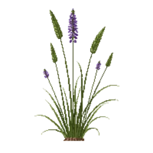

Purple Three-awn
Aristida purpurea

Purple Three-awn is a grass for edging, mid-border, suited to full sun to partial shade and clay or loam, flowering Jun, Jul, Aug.
| Type | Grass |
|---|---|
| Mature height | 60 cm |
| Spread | 45 cm |
| Aspect | full sun to partial shade |
| Foliage | Deciduous |
| Hardiness | USDA 6a-10b, RHS H6 |
| Pollinator-friendly | No |
| Pet-safe | Yes |
Where to use it in a border
At around 60 cm, it sits best along the front edge, where a low, spreading habit reads best. Give it about 45 cm of room to spread, roughly 2 to the metre when planted in a drift. It is hardy across USDA zones 6a to 10b and rated H6 by the RHS, so check it suits your area before planting.
It appears in our lists of full sun, clay soil, pet-safe plants.
Flowering through the year
Good companions
Plants that share its conditions and style, chosen to complement its place in the border:
- African Iristo flower when it does not
- Allium 'Purple Sensation'to flower when it does not
- American Cranberrybush 'Redwing'for height behind it
- American Wisteria 'Amethyst Falls'for height behind it
- Angelita Daisyto edge in front
- Anise/Blue Sagefor height behind it
Garden styles
See Purple Three-awn set in a full border, with spacing and companions worked out for your own conditions, in Border Builder.
Sources
Bloom timing and hardiness drawn from:
- SEINet (swbiodiversity.org, 2026-05)
- Lady Bird Johnson Wildflower Center (wildflower.org, 2026-05)